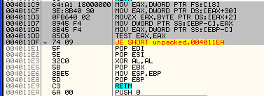
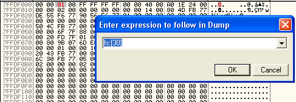
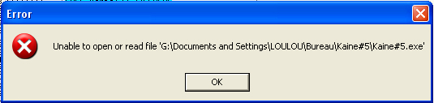

3. Tricks du Keygenme
3.0. Compression avec UPX.
Si on ouvre le binaire avec PEID, on constate qu'il est compressé avec UPX (Ultimate Packer for eXecutables), packer utilisant la technologie de compression NRV (Not Really Vanished). Pour information, il en existe une version OpenSource un peu moins performante du nom de UCL. UPX n'est pas un trick à proprement parlé mais sa présence en dit long. UPX représente un premier rempart contre les recherches de chaines (snooping) qui permettraient de reconnaître certaines routines (comme MIRACL par exemple). PEID sait très bien unpacker UPX proprement, on ne s'en prive donc pas.
3.1. IsDebuggerPresent émulé
La première technique pour détecter la présence d'un debugger est l'émulation de la fonction kernel32.IsDebuggerPresent qui renvoie 0 dans EAX si le programme n'est pas debuggé. Voici ce que l'on peut voir dans le binaire :

Cette routine accède dans un premier au TEB (Thread Environment Block) par fs:[18h] puis récupère l'adresse du PEB (Process Environment Block), section du processus qui contient des informations précises sur celui-ci. On peut y accéder directement sans passer par le TEB en allant à l adresse fs :[30] . Le troisième byte de cette structure est armé à 1 si le processus est débuggé et vaut zéro sinon. Voici le début de cette structure :
PEB:
+000 byte InheritedAddressSpace +001 byte ReadImageFileExecOptions +002 byte BeingDebugged +003 byte SpareBool +004 void *Mutant +008 void *ImageBaseAddress
Pour " masquer " le debugger, il suffit donc au démarrage du debuggage du binaire de placer la valeur 00 sur le 3ème octet du PEB. Vous allez à l'adresse fs :[30] avec CTRL + G dans la fenêtre de dump (la fenêtre en bas à gauche) et vous remplacez le 01 par 00 comme le montre l image ci-dessous :

On peut également utiliser un plugin comme HideDebugger.dll qui permet de se protéger une bonne fois pour toutes.
3.2. CreateFileA sur le binaire.
Cette technique a été utilisée pour la première fois dans le crackme Kaine#5 de Kaine. Elle vise OllyDbg mais ne représente pas vraiment une difficulté en soi.Quand vous debuggez un exécutable avec OllyDbg, vous êtes souvent amené et ce, à plusieurs reprises, à relancer le programme en cliquant sur la double flèche située en haut à gauche ou en saisissant le raccourci CTRL+F2. Ce trick bloque complètement cette possibilité de relance et nous oblige donc à fermer OllyDbg puis à le relancer !! Voilà un fichier createfile.asm qui illustre la marche à suivre :
.386 .Model Flat ,StdCall option casemap:none include \masm32\include\windows.inc include \masm32\include\kernel32.inc includelib \masm32\lib\kernel32.lib .Data file db "createfile.exe",0 .Code Main: push 0 push FILE_ATTRIBUTE_NORMAL push OPEN_EXISTING push 0 push 0 push GENERIC_READ ; ouvrir en lecture push offset file ; nom du fichier Call CreateFileA push eax ; <-- on ne peut plus recharger le binaire à partir d'ici call CloseHandle push 0 call ExitProcess End Main
Le fichier s'ouvre lui-même en lecture (pas en écriture) et du coup, on obtient ceci si on essaie de relancer le programme : (image issue du Kaine#5)

Nous allons désormais pouvoir passer à la partie principale de ce keygenme : le check du serial.